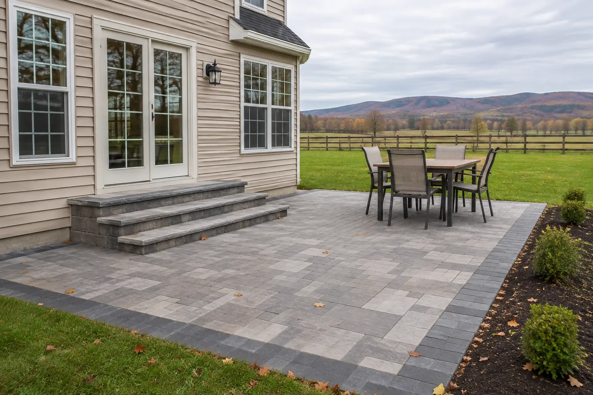
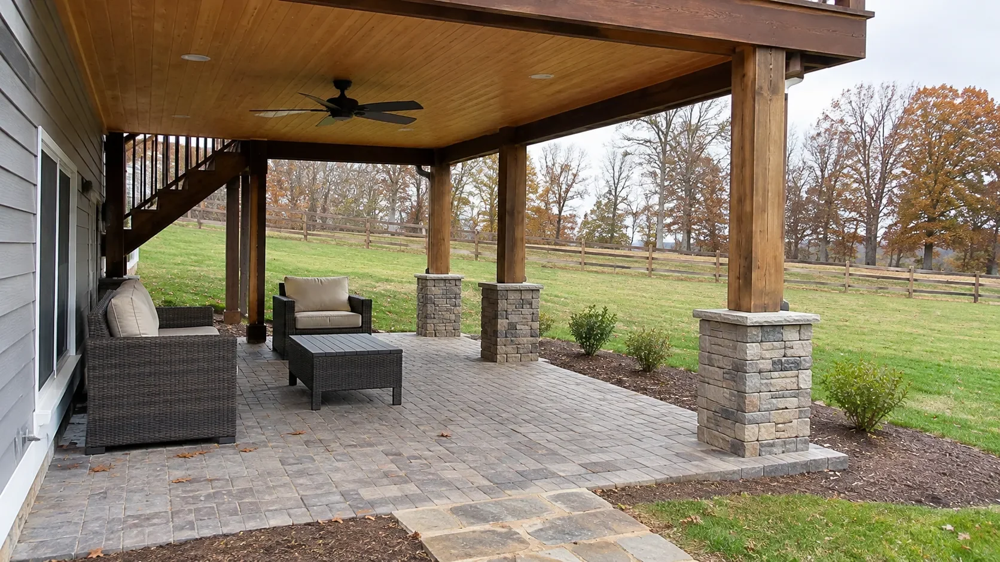
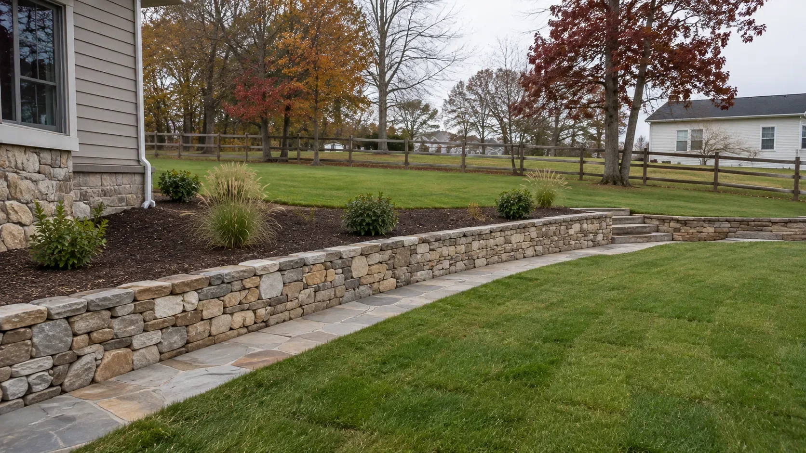
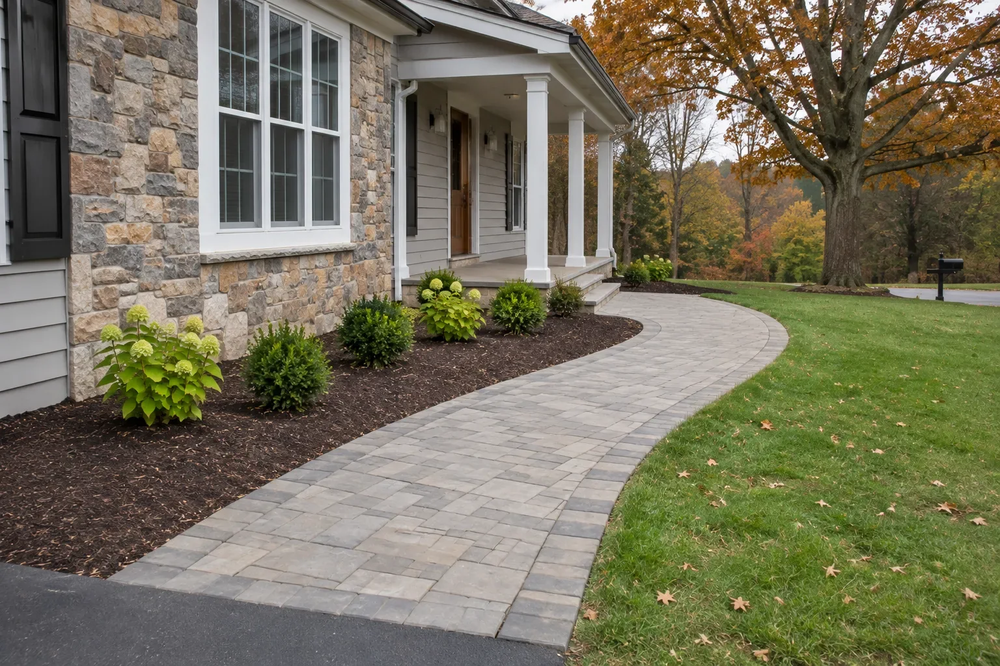
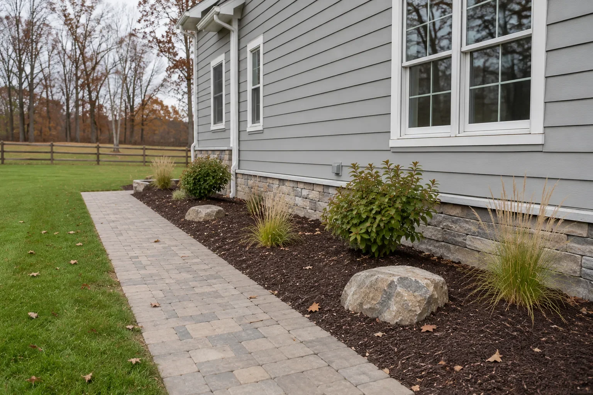
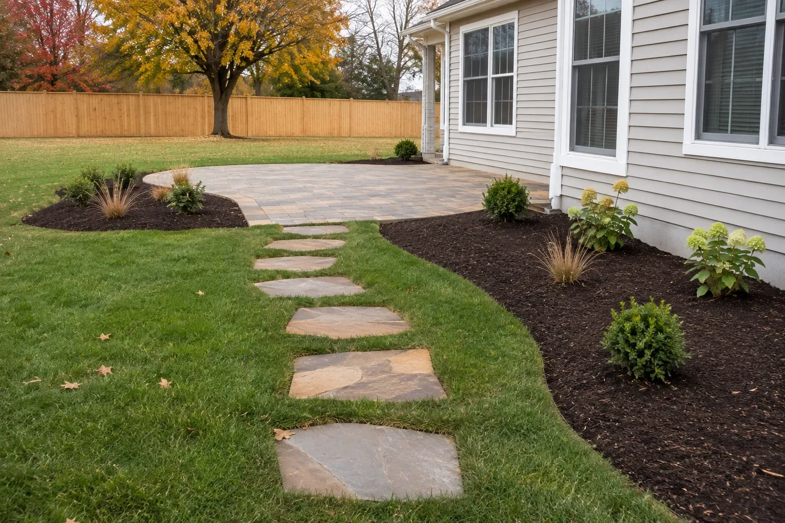

HTML y recursos
Cada página es un archivo completo y autocontenido (CSS y JavaScript dentro; imágenes y videos por dirección absoluta). Pulsa Copiar HTML, pega en tu editor y se ve todo. Con Ver código lees el HTML en el navegador; con Descargar bajas el archivo.
Descargar las 18 páginas (.zip)
¿La página se queda en “0 %” o el editor altera el código? Usa la versión ligera (ejemplo: home): el CSS y el JavaScript se cargan por enlace en vez de ir dentro del HTML. Misma ruta con linked/NOMBRE.html para cada página.
| footer Solo el footer (sin JavaScript) | VerVer códigoDescargar |
| home / | Ver páginaVer códigoDescargar |
| hardscapes-winchester-va /hardscapes-winchester-va/ | Ver páginaVer códigoDescargar |
| patios-winchester-va /patios-winchester-va/ | Ver páginaVer códigoDescargar |
| decks-winchester-va /decks-winchester-va/ | Ver páginaVer códigoDescargar |
| porches-winchester-va /porches-winchester-va/ | Ver páginaVer códigoDescargar |
| fireplaces-winchester-va /fireplaces-winchester-va/ | Ver páginaVer códigoDescargar |
| landscaping-winchester-va /landscaping-winchester-va/ | Ver páginaVer códigoDescargar |
| pools-winchester-va /pools-winchester-va/ | Ver páginaVer códigoDescargar |
| about-us /about-us/ | Ver páginaVer códigoDescargar |
| contact-us /contact-us/ | Ver páginaVer códigoDescargar |
| portfolio /portfolio/ | Ver páginaVer códigoDescargar |
| reviews /reviews/ | Ver páginaVer códigoDescargar |
| service-area /service-area/ | Ver páginaVer códigoDescargar |
| faq /faq/ | Ver páginaVer códigoDescargar |
| blog /blog/ | Ver páginaVer códigoDescargar |
| hardscapes-winchester-va-guide /hardscapes-winchester-va-guide/ | Ver páginaVer códigoDescargar |
| privacy-policy /privacy-policy/ | Ver páginaVer códigoDescargar |
| terms-and-conditions /terms-and-conditions/ | Ver páginaVer códigoDescargar |
Imágenes nuevas
Descárgalas una por una.













